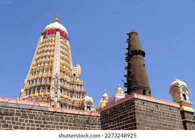
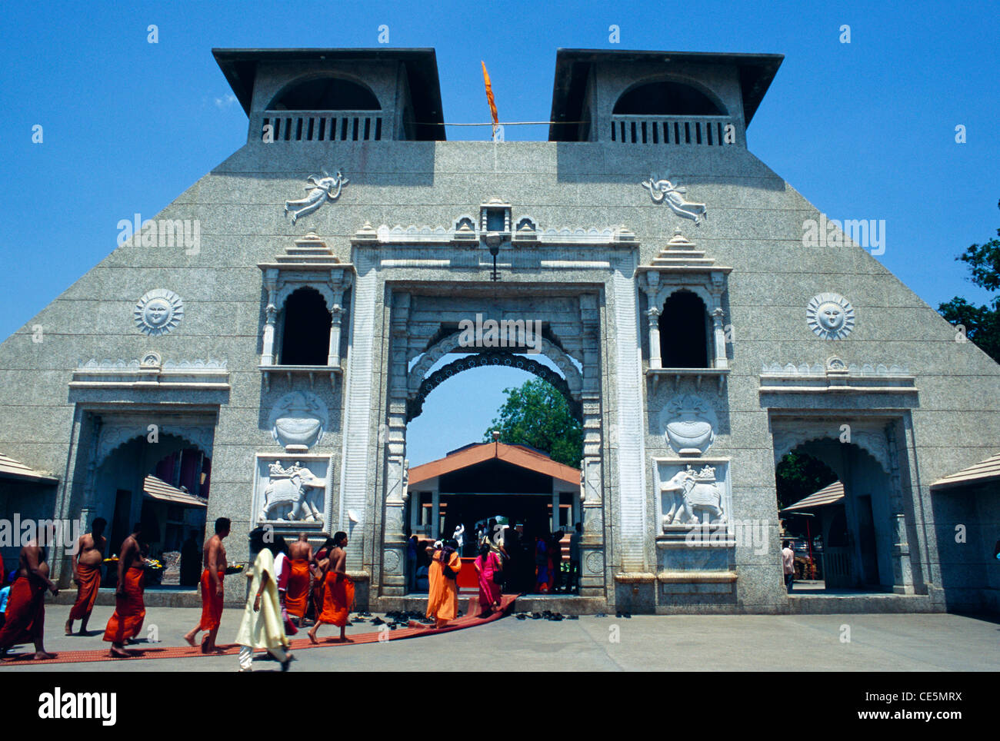

Shitala Mata Temple


"Shani Shinganapur Temple
Shani Shingnapur[1] or Shani Shinganapur[2] or Shingnapur[3] is a village in the Indian state of Maharashtra. Situated in Nevasa Taluka in Ahmednagar district, the village is known for its popular temple of Shani, the Hindu god associated with the planet (graha) Saturn. The village is 35 kilometres from the city of Ahmednagar.
Details
Shingnapur is also famous for the fact that no house in the village has doors, only door frames. Despite this, officially no theft has been reported in the village[4] although there were reports of theft in 2010 and 2011.
The temple is believed to be a "jagrut devasthan" (lit. "alive temple"), meaning that a deity still resides in the temple. Villagers believe that god Shani punishes anyone attempting thievery.[4] The deity here is "Swayambhu" (Sanskrit: self-evolved deity) that is self emerged from earth in form of black, imposing stone.
Though no one knows the exact period, it is believed that the Swayambhu Shanaishwara statue was found by shepherds of the then local hamlet. It is believed to be in existence at least since the start of Kali Yuga.
The village has a post office and a high school known as Shri Shanishwar Vidya Mandir besides the primary schools run by the Zilla Parishad. The chief source of water supply in the village is wells.
Historical importance
The story of the swayambhu statue handed down from generations through word of mouth, goes something like this: When the shepherds touched the big black stone with a pointed rod, the stone started bleeding. The shepherds were astounded. Soon the whole village gathered around to watch the miracle. On that night Lord Shaneeshwara appeared in the dream of the most devoted and pious of the shepherds.
He told the devout shepherd that He is "Shaneeshwara", and the unique black stone is His swayambhu form. The shepherd prayed, asking the Lord whether he should construct a temple for Him.
To this, Lord Shani said there is no need for a roof as the whole sky is His roof and He prefers to be under open sky. He asked the shepherd to do daily pooja and 'tēla ("oil") abhisheka' every Saturday. He also promised the whole hamlet will have no fear of dacoits or burglars or thieves.
So, Lord Shanaishwara can be seen even today, in the open yard without any roof. To this day, there are no doors for any houses, shops, temples.[6] Due to the fear of Lord Shani, none of the structures, be it dwelling houses, huts, shops, etc. situated within one kilometer radius of this Lord Shani temple have doors or locks.
No thievery or burglary was reported until 2010 when first theft was reported and again another one was reported in 2011. Shani Shingnapur is visited daily by thousands of devotees praying for Lord Shaneswara's blessings. The place is busiest on Saturdays.
Shani Thrayodashi is also considered to be a favourite day of the lord. Similarly Saturday falling on 'Amavasya' (New moon day in Sanskrit and many other Indian languages) is considered to be a favourite day of the Lord Shanaishwara and on those days devotees seeking his blessings throng this temple in huge numbers.
In the history of the village, there has not been a single incident of riot, murder or rape. It is believed that nobody from the village has ever gone to a home of the aged, nor has there been a single complaint lodged in a police station.
Shrine of Shani
The shrine for Shani consists of a five and a half foot high black rock installed on an open-air platform, which symbolizes the god Shani. A Trishula (trident) is placed along the side of the statue and a Nandi (bull) image is on the south side. In front are the small images of Shiva and Hanuman.
Generally, the temple has 30,000–45,000 visitors a day, which swells to around three lakh people on amavasya, believed to be the most auspicious day to appease Shani.[1] The village holds a fair in honour of the deity on this day.
A bigger festival is held on new moon days that fall on Saturdays. Devotees bathe Lord Shani's image with water and oil and offer flowers, and udid to him. A palanquin procession of Shani is held on the day of the fair.[4] Another celebration is the birthday of Shani, Shani Jayanti.
The shrine gained popularity with the film Surya Putra Shanidev made by film producer Gulshan Kumar[1] and featuring Puneet Issar, Mahesh Thakur, Dharmesh Tiwari, and Anuradha Paudwal.
Entry to women
According to a 400-year tradition, women are restricted from entering the inner sanctum. On 26 January 2016, a group of over 500 women, led by activist Trupti Desai, marched to the temple under the group "Bhumata Ranragani Brigade", demanding entry into the Inner sanctum. They were stopped by the police.
In a landmark judgement on 30 March 2016, the Bombay High Court asked Maharashtra government to ensure that women are not denied entry to any temple.[11] On 8 April 2016, the Shani Shingnapur trust finally allowed the women devotees to enter the sanctum.